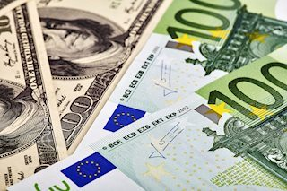
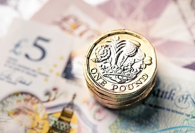

EUR/USD mantém-se firme acima de 1.0600 enquanto o dólar americano permanece fraco
EUR/USD continuou a estender seus ganhos e subiu em direção a 1.0630, alcançando seu nível mais alto em seis dias. O sentimento de risco em melhoria e os rendimentos do Tesouro estáveis exerceram pressão sobre o Dólar dos Estados Unidos. Na terça-feira, começa a reunião do FOMC, e a Eurozona vai divulgar dados de inflação.
GBP/USD estende ganhos acima de 1.2150.

GBP/USD subiu durante a sessão americana, atingindo seu nível mais
alto desde a última quarta-feira, ultrapassando 1.2170. O par foi
apoiado por um dólar americano mais fraco na segunda-feira, enquanto
os participantes do mercado aguardam dados de emprego dos EUA e as
reuniões do Fed e do BoE.
O Ouro se consolidou em torno de $2.000 antes de eventos críticos.
O ouro teve uma correção descendente após o rali da semana passada e caiu para cerca de $1.990 na segunda-feira. No entanto, com o dólar dos EUA voltando a sofrer pressão de venda, o XAU/USD reverteu sua direção e avançou em direção a $2.000, apagando uma grande parte de suas perdas diárias no processo.
O preço do Bitcoin se aproxima de US$ 35.000, mas é por isso que esperar até meados de dezembro para começar a comprar é o ideal.

O preço do Bitcoin se aproxima de US$ 35.000, mas é por isso que esperar até meados de dezembro para começar a comprar é o ideal. O preço do Bitcoin se aproximando de US$ 35.000 tem gerado otimismo entre os investidores, após o recente rali que resultou em lucros significativos para eles.